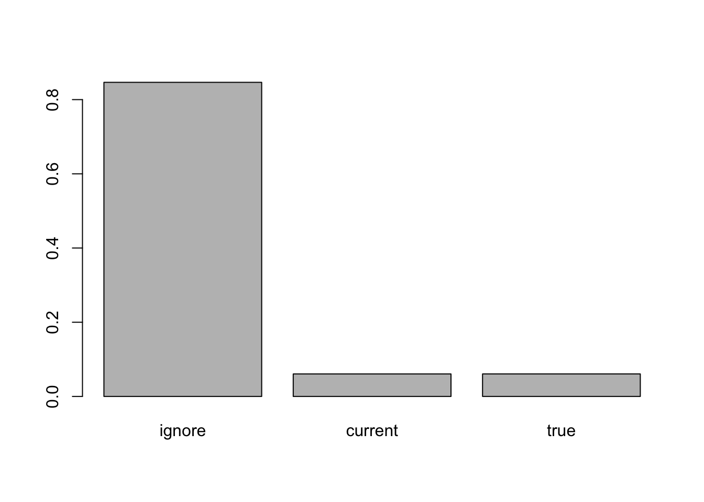

Estimate Cor heter R = 50
Yuxin Zou
2018-12-13
Last updated: 2018-12-13
workflowr checks: (Click a bullet for more information)-
✔ R Markdown file: up-to-date
Great! Since the R Markdown file has been committed to the Git repository, you know the exact version of the code that produced these results.
-
✔ Environment: empty
Great job! The global environment was empty. Objects defined in the global environment can affect the analysis in your R Markdown file in unknown ways. For reproduciblity it’s best to always run the code in an empty environment.
-
✔ Seed:
set.seed(1)The command
set.seed(1)was run prior to running the code in the R Markdown file. Setting a seed ensures that any results that rely on randomness, e.g. subsampling or permutations, are reproducible. -
✔ Session information: recorded
Great job! Recording the operating system, R version, and package versions is critical for reproducibility.
-
Great! You are using Git for version control. Tracking code development and connecting the code version to the results is critical for reproducibility. The version displayed above was the version of the Git repository at the time these results were generated.✔ Repository version: 2c0de61
Note that you need to be careful to ensure that all relevant files for the analysis have been committed to Git prior to generating the results (you can usewflow_publishorwflow_git_commit). workflowr only checks the R Markdown file, but you know if there are other scripts or data files that it depends on. Below is the status of the Git repository when the results were generated:
Note that any generated files, e.g. HTML, png, CSS, etc., are not included in this status report because it is ok for generated content to have uncommitted changes.Ignored files: Ignored: .DS_Store Ignored: .Rhistory Ignored: .Rproj.user/ Ignored: analysis/.DS_Store Ignored: analysis/.Rhistory Ignored: analysis/include/.DS_Store Ignored: code/.DS_Store Ignored: data/.DS_Store Ignored: docs/.DS_Store Ignored: output/.DS_Store Ignored: output/.sos/ Untracked files: Untracked: analysis/Classify.Rmd Untracked: analysis/EstimateCorMash.Rmd Untracked: analysis/EstimateCorMaxGD.Rmd Untracked: analysis/EstimateCorMaxMCMash.Rmd Untracked: analysis/HierarchicalFlashSim.Rmd Untracked: analysis/MashLowSignalGTEx4.Rmd Untracked: analysis/Mash_GTEx.Rmd Untracked: analysis/MeanAsh.Rmd Untracked: analysis/OutlierDetection.Rmd Untracked: analysis/OutlierDetection2.Rmd Untracked: analysis/OutlierDetection3.Rmd Untracked: analysis/OutlierDetection4.Rmd Untracked: analysis/mash_missing_row.Rmd Untracked: code/GTExNullModel.R Untracked: code/MashClassify.R Untracked: code/MashCorResult.R Untracked: code/MashCormVResult.R Untracked: code/MashNULLCorResult.R Untracked: code/MashSource.R Untracked: code/Weight_plot.R Untracked: code/addemV.R Untracked: code/dsc-differentV/ Untracked: code/dsc-differentV_signal/ Untracked: code/estimate_cor.R Untracked: code/generateDataV.R Untracked: code/johnprocess.R Untracked: code/mV.R Untracked: code/sim_mean_sig.R Untracked: code/summary.R Untracked: data/Blischak_et_al_2015/ Untracked: data/scale_data.rds Untracked: docs/figure/Classify.Rmd/ Untracked: docs/figure/OutlierDetection.Rmd/ Untracked: docs/figure/OutlierDetection2.Rmd/ Untracked: docs/figure/OutlierDetection3.Rmd/ Untracked: docs/figure/Test.Rmd/ Untracked: docs/figure/mash_missing_whole_row_5.Rmd/ Untracked: docs/include/ Untracked: output/AddEMV/ Untracked: output/CovED_UKBio_strong.rds Untracked: output/CovED_UKBio_strong_Z.rds Untracked: output/EstCorMLECompare/ Untracked: output/Flash_UKBio_strong.rds Untracked: output/GTExNULLres/ Untracked: output/GTEx_2.5_nullData.rds Untracked: output/GTEx_2.5_nullModel.rds Untracked: output/GTEx_2.5_nullPermData.rds Untracked: output/GTEx_2.5_nullPermModel.rds Untracked: output/GTEx_3.5_nullData.rds Untracked: output/GTEx_3.5_nullModel.rds Untracked: output/GTEx_3.5_nullPermData.rds Untracked: output/GTEx_3.5_nullPermModel.rds Untracked: output/GTEx_3_nullData.rds Untracked: output/GTEx_3_nullModel.rds Untracked: output/GTEx_3_nullPermData.rds Untracked: output/GTEx_3_nullPermModel.rds Untracked: output/GTEx_4.5_nullData.rds Untracked: output/GTEx_4.5_nullModel.rds Untracked: output/GTEx_4.5_nullPermData.rds Untracked: output/GTEx_4.5_nullPermModel.rds Untracked: output/GTEx_4_nullData.rds Untracked: output/GTEx_4_nullModel.rds Untracked: output/GTEx_4_nullPermData.rds Untracked: output/GTEx_4_nullPermModel.rds Untracked: output/MASH.10.em2.result.rds Untracked: output/MASH.10.mle.result.rds Untracked: output/MashCorSim--midway/ Untracked: output/Mash_EE_Cov_0_plusR1.rds Untracked: output/UKBio_mash_model.rds Untracked: output/diff_v/ Untracked: output/diff_v_signal/ Untracked: output/dsc-mashr-est_v/ Untracked: output/mVIterations/ Untracked: output/mVMLEsubset/ Untracked: output/mVUlist/ Untracked: output/result.em.rds Unstaged changes: Modified: analysis/EstimateCorMaxMVSample.Rmd Modified: analysis/Mash_UKBio.Rmd Modified: analysis/mash_missing_samplesize.Rmd Modified: output/Flash_T2_0.rds Modified: output/Flash_T2_0_mclust.rds Modified: output/Mash_model_0_plusR1.rds Modified: output/PresiAddVarCol.rds
Expand here to see past versions:
rrmse = function(data, model){
sqrt(mean((data$B - model$result$PosteriorMean)^2)/mean((data$B - data$Bhat)^2))
}
ROC.table = function(data, model){
sign.test = data*model$result$PosteriorMean
thresh.seq = seq(0, 1, by=0.005)[-1]
m.seq = matrix(0,length(thresh.seq), 2)
colnames(m.seq) = c('TPR', 'FPR')
for(t in 1:length(thresh.seq)){
m.seq[t,] = c(sum(sign.test>0 & model$result$lfsr <= thresh.seq[t])/sum(data!=0),
sum(data==0 & model$result$lfsr <=thresh.seq[t])/sum(data==0))
}
return(m.seq)
}
library(knitr)
library(kableExtra)Common noise correlation
We simulate null data which has common noise correlation structure. We fit mash model without and with the estimated correlation structure. There are lots of false positives in the model without the correlation structure. The posterior mean is far from the truth.
library(mvtnorm)
library(mashr)Loading required package: ashrset.seed(1)
n = 10000; p = 50
B = matrix(0,n,p)
V = matrix(0.75, p, p); diag(V) = 1
Bhat = rmvnorm(n, sigma = V)
simdata = list(B = B, Bhat = Bhat, Shat = 1)data = mash_set_data(Bhat, Shat=1)
U.c = cov_canonical(data)
m.ignore = mash(data, U.c, verbose = FALSE, optmethod = 'mixSQP')
V.current = estimate_null_correlation(data, U.c, optmethod = 'mixSQP')
m.current = V.current$mash.model
data.true = mash_update_data(data, V = V)
m.true = mash(data.true, U.c, verbose = FALSE, optmethod = 'mixSQP')ign = c(get_loglik(m.ignore), length(get_significant_results(m.ignore)))
current = c(get_loglik(m.current), length(get_significant_results(m.current)))
true = c(get_loglik(m.true), length(get_significant_results(m.true)))
tmp = rbind(ign, current, true)
row.names(tmp) = c('ignore', 'current', 'true')
colnames(tmp) = c('loglik', '# signif')
tmp %>% kable() %>% kable_styling()| loglik | # signif | |
|---|---|---|
| ignore | -543911.7 | 7712 |
| current | -388072.0 | 4 |
| true | -388713.9 | 4 |
RRMSE:
tmp = c(rrmse(simdata, m.ignore), rrmse(simdata, m.current), rrmse(simdata, m.true))
barplot(tmp, names.arg = c('ignore', 'current', 'true'))
Expand here to see past versions of unnamed-chunk-5-1.png:
| Version | Author | Date |
|---|---|---|
| 6b96908 | zouyuxin | 2018-12-13 |
Two different noise correlations
Now, we simulate data with 2 noise correlation structures. Half of the null data have no noise correlation, the other half have noise correlation.
Bhat1 = rmvnorm(n/2, sigma = diag(p))
Bhat2 = rmvnorm(n/2, sigma = V)
Bhat = rbind(Bhat1, Bhat2)
simdata = list(B = B, Bhat = Bhat, Shat = 1)
data = mash_set_data(Bhat, Shat=1)
U.c = cov_canonical(data)
m.I = mash(data, U.c, verbose = FALSE, optmethod = 'mixSQP')
data.V = mash_update_data(data, V = V)
m.V = mash(data.V, U.c, verbose = FALSE, optmethod = 'mixSQP')
V.current = estimate_null_correlation(data, U.c, optmethod = 'mixSQP')
m.current = V.current$mash.model
Vtrue = array(0,dim=c(p,p,n))
Vtrue[,,1:(n/2)] = diag(p)
Vtrue[,,(n/2+1): n] = V
data.true = mash_update_data(data, V = Vtrue)
m.true = mash(data.true, U.c, verbose = FALSE, algorithm.version = 'R', optmethod = 'mixSQP')Ionly = c(get_loglik(m.I), length(get_significant_results(m.I)))
Vonly = c(get_loglik(m.V), length(get_significant_results(m.V)))
current = c(get_loglik(m.current), length(get_significant_results(m.current)))
true = c(get_loglik(m.true), length(get_significant_results(m.true)))
tmp = rbind(Ionly, Vonly, current, true)
row.names(tmp) = c('I only', 'V only', 'current', 'true')
colnames(tmp) = c('loglik', '# signif')
tmp %>% kable() %>% kable_styling()| loglik | # signif | |
|---|---|---|
| I only | -630201.8 | 3092 |
| V only | -563001.6 | 4995 |
| current | -594555.6 | 2657 |
| true | -549877.5 | 5 |
RRMSE:
tmp = c(rrmse(simdata, m.I), rrmse(simdata, m.V), rrmse(simdata, m.current), rrmse(simdata, m.true))
barplot(tmp, names.arg = c('I only', 'V only', 'current', 'true'))
Expand here to see past versions of unnamed-chunk-8-1.png:
| Version | Author | Date |
|---|---|---|
| 6b96908 | zouyuxin | 2018-12-13 |
The estimated weights using current method is
barplot(get_estimated_pi(m.current), las=2, cex.names = 0.7)Expand here to see past versions of unnamed-chunk-9-1.png:
| Version | Author | Date |
|---|---|---|
| 6b96908 | zouyuxin | 2018-12-13 |
Data with signals
set.seed(2018)
B1 = matrix(0, n/2, p)
V.1 = matrix(0,p,p); V.1[1,1] = 1
B2 = rmvnorm(n/2, sigma = V.1)
B = rbind(B1, B2)
V.random = array(0, dim=c(p,p,n))
ind = sample(1:n, n/2)
V.random[,,ind] = V
V.random[,,-ind] = diag(p)
Ehat = matrix(0, n, p)
Ehat[ind,] = rmvnorm(n/2, sigma = V)
Ehat[-ind,] = rmvnorm(n/2, sigma = diag(p))
Bhat = B + Ehat
simdata = list(B = B, Bhat=Bhat, Shat = 1)data = mash_set_data(Bhat, Shat=1)
U.c = cov_canonical(data)
m.I = mash(data, U.c, verbose = FALSE, optmethod = 'mixSQP')
data.V = mash_update_data(data, V = V)
m.V = mash(data.V, U.c, verbose = FALSE, optmethod = 'mixSQP')
V.current = estimate_null_correlation(data, U.c, optmethod = 'mixSQP')
m.current = V.current$mash.model
data.true = mash_update_data(data, V = V.random)
m.true = mash(data.true, U.c, verbose = FALSE, algorithm.version = 'R', optmethod = 'mixSQP')Ionly = c(get_loglik(m.I), length(get_significant_results(m.I)), sum(get_significant_results(m.I) <= n/2))
Vonly = c(get_loglik(m.V), length(get_significant_results(m.V)), sum(get_significant_results(m.V) <= n/2))
current = c(get_loglik(m.current), length(get_significant_results(m.current)), sum(get_significant_results(m.current) <= n/2))
true = c(get_loglik(m.true), length(get_significant_results(m.true)), sum(get_significant_results(m.true) <= n/2))
tmp = rbind(Ionly, Vonly, current, true)
row.names(tmp) = c('I only', 'V only', 'current', 'true')
colnames(tmp) = c('loglik', '# signif', 'false positive')
tmp %>% kable() %>% kable_styling()| loglik | # signif | false positive | |
|---|---|---|---|
| I only | -633196.5 | 3137 | 1570 |
| V only | -567485.0 | 5433 | 2513 |
| current | -599388.7 | 2776 | 1341 |
| true | -555850.9 | 144 | 1 |
RRMSE:
tmp = c(rrmse(simdata, m.I), rrmse(simdata, m.V), rrmse(simdata, m.current), rrmse(simdata, m.true))
barplot(tmp, names.arg = c('I only', 'V only', 'current', 'true'))Expand here to see past versions of unnamed-chunk-13-1.png:
| Version | Author | Date |
|---|---|---|
| 6b96908 | zouyuxin | 2018-12-13 |
The estimated weights using current method is
barplot(get_estimated_pi(m.current), las=2, cex.names = 0.7)Expand here to see past versions of unnamed-chunk-14-1.png:
| Version | Author | Date |
|---|---|---|
| 6b96908 | zouyuxin | 2018-12-13 |
ROC:
roc.seq = ROC.table(simdata$B, m.true)
plot(roc.seq[,'FPR'], roc.seq[,'TPR'], type='l', xlab = 'FPR', ylab='TPR',
main=paste0(' True Pos vs False Pos'), cex=1.5, lwd = 1.5, col = 'cyan')
roc.seq = ROC.table(simdata$B, m.current)
lines(roc.seq[,'FPR'], roc.seq[,'TPR'], col='purple', lwd = 1.5)
roc.seq = ROC.table(simdata$B, m.I)
lines(roc.seq[,'FPR'], roc.seq[,'TPR'], col='red', lwd = 1.5)
roc.seq = ROC.table(simdata$B, m.V)
lines(roc.seq[,'FPR'], roc.seq[,'TPR'], col='darkolivegreen4', lwd = 1.5)
legend('bottomright', c('oracle','current', 'I only', 'V only'), col=c('cyan','purple','red','darkolivegreen4'),
lty=c(1,1,1,1), lwd=c(1.5,1.5,1.5,1.5))Expand here to see past versions of unnamed-chunk-15-1.png:
| Version | Author | Date |
|---|---|---|
| 6b96908 | zouyuxin | 2018-12-13 |
Session information
sessionInfo()R version 3.5.1 (2018-07-02)
Platform: x86_64-apple-darwin15.6.0 (64-bit)
Running under: macOS 10.14.1
Matrix products: default
BLAS: /Library/Frameworks/R.framework/Versions/3.5/Resources/lib/libRblas.0.dylib
LAPACK: /Library/Frameworks/R.framework/Versions/3.5/Resources/lib/libRlapack.dylib
locale:
[1] en_US.UTF-8/en_US.UTF-8/en_US.UTF-8/C/en_US.UTF-8/en_US.UTF-8
attached base packages:
[1] stats graphics grDevices utils datasets methods base
other attached packages:
[1] mashr_0.2.19.0555 ashr_2.2-23 mvtnorm_1.0-8 kableExtra_0.9.0
[5] knitr_1.20
loaded via a namespace (and not attached):
[1] lattice_0.20-35 colorspace_1.3-2 htmltools_0.3.6
[4] viridisLite_0.3.0 yaml_2.2.0 rlang_0.3.0.1
[7] R.oo_1.22.0 mixsqp_0.1-92 pillar_1.3.0
[10] R.utils_2.7.0 foreach_1.4.4 plyr_1.8.4
[13] stringr_1.3.1 munsell_0.5.0 workflowr_1.1.1
[16] rvest_0.3.2 R.methodsS3_1.7.1 codetools_0.2-15
[19] evaluate_0.12 doParallel_1.0.14 pscl_1.5.2
[22] parallel_3.5.1 highr_0.7 Rcpp_1.0.0
[25] readr_1.1.1 scales_1.0.0 backports_1.1.2
[28] rmeta_3.0 truncnorm_1.0-8 abind_1.4-5
[31] hms_0.4.2 digest_0.6.18 stringi_1.2.4
[34] grid_3.5.1 rprojroot_1.3-2 tools_3.5.1
[37] magrittr_1.5 tibble_1.4.2 crayon_1.3.4
[40] whisker_0.3-2 pkgconfig_2.0.2 MASS_7.3-50
[43] Matrix_1.2-14 SQUAREM_2017.10-1 xml2_1.2.0
[46] assertthat_0.2.0 rmarkdown_1.10 httr_1.3.1
[49] rstudioapi_0.8 iterators_1.0.10 R6_2.3.0
[52] git2r_0.23.0 compiler_3.5.1 This reproducible R Markdown analysis was created with workflowr 1.1.1